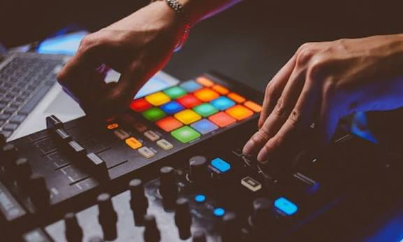

01 / Music production
Give your sound the finish it deserves.
From the first rough bounce to the final master, we help bring your music into focus with careful mixing and mastering at accessible rates.

Made for your next release
Clarity, balance and feeling — all in one mix.
Your song should sound like you, only clearer, fuller and ready to share. LYDIAN REKORDS offers mixing and mastering support for emerging artistes who want to present their work with confidence.
- Mixing and mastering support
- Quality-focused sound finishing
- A collaborative process built around your goals
MixingBalance vocals and instruments, shape the space and help each part of your track sit right.
MasteringPolish the final mix for a more consistent, release-ready listening experience.
Artist-focusedWe listen to your direction and keep your sound and intentions at the centre.
Your next move starts here
Let’s make your creative idea happen.
Get in touch with LYDIAN REKORDS to discuss what you need, your timeline and a practical budget.
Contact LYDIAN REKORDS ↗